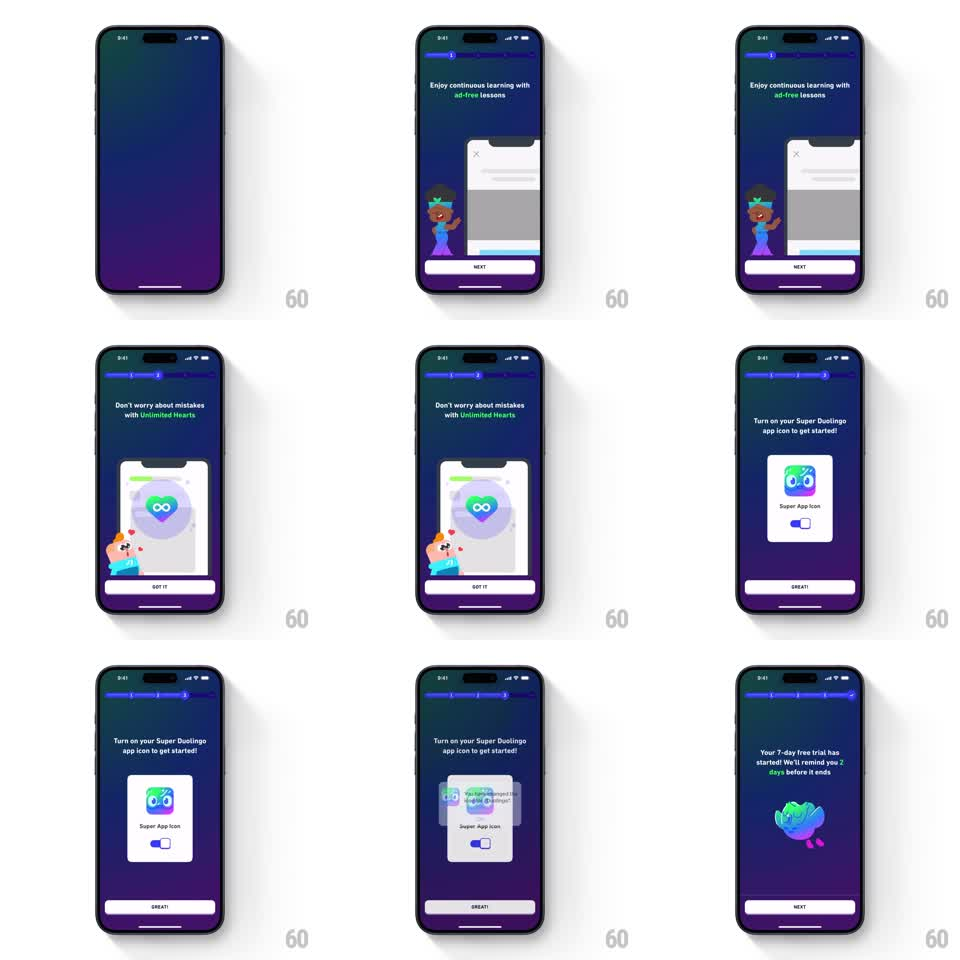

Media
Frame-by-frame

Rebuild this interaction 1:1: Duolingo's Super pitch stepper - a dark-purple, multi-page story flow where each benefit page slides in with a staggered mascot-and-mock entrance, a segmented progress bar tracks the pages, and one page carries a working app-icon toggle, ending on a trial-started confirmation.

Rebuild this interaction 1:1: Duolingo's Super pitch stepper - a dark-purple, multi-page story flow where each benefit page slides in with a staggered mascot-and-mock entrance, a segmented progress bar tracks the pages, and one page carries a working app-icon toggle, ending on a trial-started confirmation.
## Integration
Integration: stack-agnostic spec - springs given as stiffness/damping, timed motions as duration + curve; map every value to your framework and animation library of choice.
## Scene
Dark purple gradient flow with a segmented progress bar under the status bar. Page 1: "Enjoy continuous learning with ad-free lessons", a waving mascot and a phone mock, white NEXT button. Page 2: "Don't worry about mistakes with Unlimited Hearts", mascot with an infinity-heart phone mock, GOT IT. Page 3: "Turn on your Super Duolingo app icon to get started!", a card with the Super app icon and an iOS-style toggle, GREAT! Final: "Your 7-day free trial has started! We'll remind you 2 days before it ends" with the owl lying relaxed.
## Motion spec
Pattern: multi-step pager with staggered entrances and an inline toggle.
- Progress bar: the active segment fills (250ms ease-out) as each page lands.
- Page entrance: headline slides in from the right (280ms ease-out), mascot follows 80ms later with a spring (~300/20), the phone mock/card rises from below 160ms later (spring ~280/22). Button crossfades in last (150ms).
- Page exit: current content slides left and fades (220ms, ease-in) as the next enters.
- Mascots idle-loop on each page (wave or bounce, 1.2s cycle).
- Toggle: thumb slides across (150ms, ease-out), track fills purple; a toast confirmation ("You'll see changes the next time you...") slides over the card (250ms).
- Final page: the owl pops in with a spring (~300/16) and settles into its lying pose.
## Calibration
- The stagger order (text -> mascot -> mock -> button) must hold on every page.
- The toggle is functional within the demo - tapping it flips state with haptic-timed feedback, not a fake highlight.
## Reduced motion
Pages crossfade (200ms); no stagger, no mascot loops; toggle changes state instantly.
## Don't miss
- Each page uses a different mascot pose matched to the benefit.
- The progress bar advances on page land, not on tap.